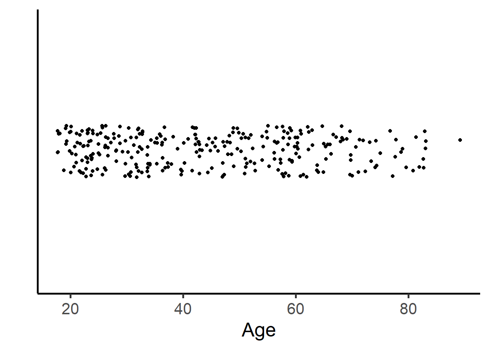

Chapter 04: Data Visualization
Robin Donatello
Last update 2021-08-07
Load Libraries
library(scales); library(dplyr); library(gridExtra);
library(xtable); library(magrittr); library(knitr)
library(vcd)
opts_chunk$set(echo = TRUE, warning=FALSE, message=FALSE, cache=TRUE)Helper functions
univ.n.p <- function(df, var, dig){
df %>% select_(var) %>% na.omit() %>% group_by_(var) %>%
summarise(n=n()) %>%
mutate(pct=round(n/sum(n),dig))
}
univ.n.pct <- function(df, var){
df %>% select_(var) %>% na.omit() %>% group_by_(var) %>%
summarise(n=n()) %>%
mutate(pct=paste0(round(n/sum(n)*100,1), '%'))
}
biv.n.col.p <- function(df, row.var, col.var) {
df %>% group_by_(row.var, col.var) %>%
summarise(count=n()) %>%
mutate(pct=round(count/sum(count),3))
}Load & prepare data
data.path <- "data6e/"
raw <- read.delim(paste0(data.path,"Parhiv.txt"), sep="\t", header=TRUE)
parhiv <- raw %>%
mutate(JOBMO = factor(JOBMO,
labels=c("Employed", "Unemployed", "Retired/Disabled")),
EDUMO = factor(EDUMO,
labels=c("Less than High School", "High School Graduate/GED",
"Post Secondary")),
bsi_overall = rowMeans(raw[,grep("BSI", names(raw))]),
log_bsi_overall = log(bsi_overall+.01),
parent_bonding = (PB01+(4-PB02)+(4-PB04)+PB05+PB06+
PB11+PB12+(4-PB14)+(4-PB16)+PB17+(4-PB18)+(4-PB24))/12)
parhiv$AGEALC[parhiv$AGEALC==0] <- NA
parhiv$AGEMAR[parhiv$AGEMAR==0] <- NA
parhiv$AGESMOKE[parhiv$AGESMOKE==0] <- NA
raw.d <- read.delim(paste0(data.path,"Depress.txt"), sep="\t", header=TRUE)
depress <- raw.d %>%
mutate(gender = factor(SEX,
labels=c("Male", "Female")),
educat = factor(EDUCAT,
labels=c("<HS", "Some HS", "HS Grad", "Some college",
"BS", "MS", "PhD")),
marital = factor(MARITAL,
labels = c("Never Married", "Married", "Divorced",
"Separated", "Widowed")))
raw.l <- read.delim(paste0(data.path,"Lung.txt"), sep="\t", header=TRUE)
mice <- read.delim(paste0(data.path,"Mice.txt"), sep="\t", header=TRUE)Demo
hist(parhiv$bsi_overall);box()ggplot(parhiv, aes(x=bsi_overall)) +
geom_histogram() +
theme_bw(base_size=16)ggplot(parhiv, aes(x=bsi_overall)) +
geom_histogram() +
theme_classic(base_size = 20) +
xlab("BSI score") + ylab("Frequency") + ggtitle("Brief Symptom Inventory Score")Univariate
Categorical
Univariate barplot with counts
ggplot(filter(parhiv, !is.na(EDUMO)), aes(x=EDUMO)) +
theme_classic(base_size = 20) +
geom_bar(aes(y = ..count..)) + ggtitle("Frequency of educational level") +
xlab("Highest educational level attained") +
scale_x_discrete(labels = function(x) lapply(strwrap(x, width = 12, simplify = FALSE),
paste, collapse="\n")) +
geom_text(aes(y=..count.. + 5, label=..count..), stat='count', size = 7) +
theme(axis.ticks.x=element_blank()) Univariate barplot with percentages
ptab.ctp <- univ.n.p(parhiv, "EDUMO", dig=3)
ggplot(ptab.ctp, aes(x=EDUMO)) +
geom_bar(aes(y=pct), stat="identity") +
xlab("Highest educational level attained") + ylab("") +
ggtitle("Percent of mothers with each \n educational level") +
theme_classic(base_size = 20) +
scale_y_continuous(labels=percent, limits=c(0,1)) + ylab("") +
scale_x_discrete(labels = function(x) lapply(strwrap(x, width = 12, simplify = FALSE),
paste, collapse="\n")) +
geom_text(aes(y=pct + .05, label=paste0(pct*100, "%")), size = 7) +
theme(axis.ticks.x=element_blank()) Cleveland Dotplot
ptab.empl <- univ.n.pct(depress, "marital")
ggplot(ptab.empl, aes(x=n, y=reorder(marital, n), label=n)) +
geom_point(size = 3) +
geom_text(size=5, vjust=-1) +
xlab("Frequency") + ylab("Marital Status") + ggtitle("Frequency of marital status") +
theme_classic(base_size=20) +
scale_x_continuous(limits=c(0,130))+
theme(panel.grid.major.x = element_blank(), axis.ticks.y=element_blank(),
panel.grid.minor.x = element_blank(),
panel.grid.major.y = element_line(color='grey60', linetype='dashed'))Pie Chart
dc <- table(depress$marital)
pie(dc, labels = paste0(names(dc), ' (', round(prop.table(dc)*100,1), "%)"),
col = c("#f7f7f7","#cccccc", "#969696", "#636363", "#252525"), cex=1.5, radius=0.5)Stem-leaf plot
par(mar=c(0,0,0,0), oma=c(0,0,0,0))
plot(c(0,0.5), c(0,1), type="n", axes=FALSE, main="", ylab="", xlab="")
tmp <- capture.output(stem(sort(depress$AGE)))
tmp <- tmp[4:length(tmp)]
text(0,1, paste(tmp, collapse='\n'), adj=c(0,1), family='mono', cex=1)Stripchart
ggplot(depress, aes(y=AGE, x=1)) +
geom_jitter(position = position_jitter(0.2)) +
ylab("Age") +
scale_x_continuous(limits=c(0,2)) +
theme_classic(base_size=20)+ xlab("")+
theme(panel.grid.major.y = element_blank(), axis.ticks.y=element_blank(),
panel.grid.minor.y= element_blank(), axis.text.y=element_blank()) +
coord_flip()
Continuous
Univariate histogram
ggplot(depress, aes(x=AGE)) +
geom_histogram(colour="black", fill="grey80", binwidth=10) +
xlab("Age") + ylab("Frequency") +
ggtitle("Distribution of age") +
theme_classic(base_size = 16) +
scale_x_continuous(limits=c(20,80), breaks=seq(20,80,by=10))Univariate histogram with default bins
ggplot(depress, aes(x=AGE)) +
geom_histogram(colour="black", fill="grey80") +
xlab("Age") + ylab("Frequency") +
ggtitle("Distribution of age") +
theme_classic(base_size = 16) +
scale_x_continuous(limits=c(15,90), breaks=seq(20,90,by=10))Univariate Density
ggplot(depress, aes(x=AGE)) +
geom_histogram(aes(y=..density..), colour="black", fill="grey80") +
xlab("Age") + ylab("Density") +
geom_density(colour="black", lwd=1.1) +
scale_x_continuous(limits=c(15,90), breaks=seq(20,90,by=10)) +
ggtitle("Distribution of age") + theme_classic(base_size = 16)Univariate boxplot
txt <- boxplot(depress$AGE, plot=FALSE)$stats
data.labels <- data.frame(value=as.vector(txt), lab=as.character(txt))
labels <- data.frame(value=as.vector(txt),
lab=c("Min", "Q(0.25)", "Median", "Q(0.75)", "Max"))
ggplot(depress, aes(y=AGE, x=1)) +
geom_boxplot(width=.3) + ylab("Age") + xlab("") +
scale_x_continuous(limits=c(0.5,1.35)) +
theme_classic(base_size = 16) +
theme(axis.ticks = element_blank(), axis.text.x = element_blank()) +
geom_text(data=data.labels,aes(x=0.75,y=value,label=lab),angle=0, size=5) +
geom_text(data=labels,aes(x=0.6,y=value,label=lab),angle=0, size=5)Univariate boxplot modified
txt <- boxplot(depress$CESD, plot=FALSE)$stats
data.labels <- data.frame(value=as.vector(txt), lab=as.character(txt))
labels <- data.frame(value=as.vector(txt),
lab=c("Min", "Q(0.25)", "Median", "Q(0.75)", "Largest value \n within fence"))
ggplot(depress, aes(y=CESD, x=1)) +
geom_boxplot(width=.3) + ylab("CESD") + xlab("") +
scale_x_continuous(limits=c(0.75,1.5)) +
theme_classic(base_size = 16) +
theme(axis.ticks = element_blank(), axis.text.x = element_blank()) +
geom_text(data=data.labels,aes(x=1.25,y=value,label=lab),angle=0, size=5) +
geom_text(data=labels,aes(x=1.4,y=value,label=lab),angle=0, size=5)Univariate boxplot
ggplot(depress, aes(y=AGE, x=1)) +
geom_boxplot(width=.3) + geom_violin(alpha=.2) +
ylab("Age") + xlab("") + theme_classic(base_size = 16) +
theme(axis.ticks = element_blank(), axis.text.x = element_blank()) +
stat_summary(fun.y=mean, geom="point", shape=18, size=4) ggplot(depress, aes(y=CESD, x=1)) +
geom_boxplot(width=.3) + geom_violin(alpha=.2) +
ylab("CESD") + xlab("") + theme_classic(base_size = 16) +
geom_jitter(alpha=.3, width=.1) +
theme(axis.ticks = element_blank(), axis.text.x = element_blank()) Bivariate
Categorical ~ Categorical
Two-way Frequency table
table(depress$gender, depress$educat) %>% kable()| <HS | Some HS | HS Grad | Some college | BS | MS | PhD | |
|---|---|---|---|---|---|---|---|
| Male | 4 | 19 | 39 | 18 | 17 | 8 | 6 |
| Female | 1 | 42 | 75 | 30 | 26 | 6 | 3 |
Two-way cell proportions
kable(
addmargins(
prop.table(table(depress$gender, depress$educat))*100
),
digits=1)| <HS | Some HS | HS Grad | Some college | BS | MS | PhD | Sum | |
|---|---|---|---|---|---|---|---|---|
| Male | 1.4 | 6.5 | 13.3 | 6.1 | 5.8 | 2.7 | 2.0 | 37.8 |
| Female | 0.3 | 14.3 | 25.5 | 10.2 | 8.8 | 2.0 | 1.0 | 62.2 |
| Sum | 1.7 | 20.7 | 38.8 | 16.3 | 14.6 | 4.8 | 3.1 | 100.0 |
Two-way row proportions
kable(
addmargins(
prop.table(table(depress$gender, depress$educat), margin=1)*100
),
digits=1)| <HS | Some HS | HS Grad | Some college | BS | MS | PhD | Sum | |
|---|---|---|---|---|---|---|---|---|
| Male | 3.6 | 17.1 | 35.1 | 16.2 | 15.3 | 7.2 | 5.4 | 100 |
| Female | 0.5 | 23.0 | 41.0 | 16.4 | 14.2 | 3.3 | 1.6 | 100 |
| Sum | 4.2 | 40.1 | 76.1 | 32.6 | 29.5 | 10.5 | 7.0 | 200 |
Two-way column proportions
kable(
addmargins(
prop.table(table(depress$gender, depress$educat), margin=2)*100
),
digits=1)| <HS | Some HS | HS Grad | Some college | BS | MS | PhD | Sum | |
|---|---|---|---|---|---|---|---|---|
| Male | 80 | 31.1 | 34.2 | 37.5 | 39.5 | 57.1 | 66.7 | 346.2 |
| Female | 20 | 68.9 | 65.8 | 62.5 | 60.5 | 42.9 | 33.3 | 353.8 |
| Sum | 100 | 100.0 | 100.0 | 100.0 | 100.0 | 100.0 | 100.0 | 700.0 |
Bivariate stacked barchart
phna <- parhiv %>% select(JOBMO, EDUMO) %>% na.omit()
pct.cc <- biv.n.col.p(phna, "EDUMO", "JOBMO")
ggplot(phna, aes(x=EDUMO, fill=JOBMO)) +
geom_bar() +
theme_classic(base_size = 16) +
scale_fill_grey(name="Job Status") + xlab("") +
theme(legend.position="top", legend.title=element_text(size=10), legend.text=element_text(size=10)) +
coord_equal(1/30) + ylab("Frequency") +
scale_x_discrete(labels = function(x) lapply(strwrap(x, width = 12, simplify = FALSE),
paste, collapse="\n")) +
theme(axis.ticks.x=element_blank()) Bivariate stacked barchart
ggplot(pct.cc, aes(x=EDUMO, fill=JOBMO)) +
geom_bar(aes(y=pct), stat='identity') +
scale_fill_grey(guide=FALSE) +
theme_classic(base_size = 16) +
xlab("") + ylab("Percent") +
scale_y_continuous(labels=percent) +
coord_equal(1/0.35) +
scale_x_discrete(labels = function(x) lapply(strwrap(x, width = 12, simplify = FALSE),
paste, collapse="\n")) +
theme(axis.ticks.x=element_blank()) Bivariate side by side barchart
ggplot(pct.cc, aes(x=EDUMO, y=pct, fill=JOBMO)) +
scale_fill_grey(name="Job Status") +
geom_bar(stat="identity", position = "dodge") +
theme_classic(base_size = 16) + xlab("") +
scale_y_continuous(labels = percent) +
ylab("Percent") +
scale_x_discrete(labels = function(x) lapply(strwrap(x, width = 12, simplify = FALSE),
paste, collapse="\n")) +
theme(axis.ticks.x=element_blank()) Bivariate dot plot for differences
ggplot(pct.cc, aes(x=count, y=reorder(JOBMO, count))) +
geom_point(size = 3) +
xlab("Frequency") +
facet_grid(EDUMO ~ ., labeller=label_wrap_gen(14)) +
geom_segment(aes(yend=JOBMO), xend=0, color='grey50') +
ylab("Job Status") + theme_bw(base_size = 16) +
theme(panel.grid.major.y = element_blank()) +
theme(axis.ticks.y=element_blank()) Bivariate dot plot for differences
bdpd <- parhiv %>% mutate(gender=factor(GENDER, labels=c("Male", "Female"))) %>%
select(JOBMO, gender) %>% na.omit() %>%
group_by(JOBMO, gender) %>%
summarise(count=n())
ggplot(bdpd, aes(x=count, y=reorder(JOBMO, count))) +
geom_point(aes(shape=gender), size=3) +
geom_line(aes(group=JOBMO)) +
scale_shape_discrete(name="Gender of \n teen") +
xlab("Frequency") +
ylab("Mother's Job Status") +
theme_bw(base_size = 16) +
theme(panel.grid.major.y = element_blank()) +
theme(axis.ticks.y=element_blank()) 
Mosaic Plot
kable(
prop.table(
table(phna$EDUMO, phna$JOBMO)
)*100,
digits=1)| Employed | Unemployed | Retired/Disabled | |
|---|---|---|---|
| Less than High School | 4.0 | 24.7 | 13.2 |
| High School Graduate/GED | 4.0 | 14.4 | 13.8 |
| Post Secondary | 5.2 | 10.9 | 9.8 |
varnames <- list(set_varnames=c(JOBMO="Job Status", EDUMO="Highest Education Level"),
rot_labels = c(0,90,0,0),
offset_varnames = c(left = 5, top=1),
just_labels=c(left="right"))
lnames <- list(EDUMO = c("Less than\nHigh School", "High School\nGraduate/GED", "Post\nSecondary"))
mosaic(JOBMO~EDUMO, data=phna, color=TRUE,
set_labels=lnames,
labeling_args = varnames,
margins=c(top=5, right=0, left=7))Continuous ~ Continuous
Scatterplot
ggplot(depress, aes(x=AGE, y=CESD)) + geom_point(size=1, col="grey") + theme_classic(base_size = 16) +
xlab("Age") + ylab("CESD") +
geom_smooth(se=FALSE, method="lm", color="black", aes(linetype="Linear"))+
geom_smooth(se=FALSE, method="loess", color="black", aes(linetype="Lowess"))+
scale_linetype_manual(values = c("solid","dashed"), name="line types",
labels=c("Linear","Lowess"),guide="legend")Profile plot
ggplot(mice, aes(y=WEIGHT, x=DAY, group=ID)) +
geom_point() + geom_line() +
theme_classic(base_size = 16) +
ylab("Weight (g)") + xlab("Time (Days)")
Bivariate Continuous + Categorical
ggplot(depress, aes(y=CESD, x=gender, color=gender)) +
scale_color_grey(start=0, end=0.5,guide=FALSE) +
geom_boxplot(width=.3) + geom_violin(alpha=.2) +
ylab("CESD") + xlab("") +
theme_classic(base_size = 20) +
stat_summary(fun.y=mean, geom="point", shape=18, size=4) +
theme(axis.ticks.x=element_blank()) ggplot(depress, aes(x=CESD, color=gender)) +
geom_density() + theme_classic(base_size = 20) +
ylab("Density") + xlab("CESD")+
scale_color_grey(start=0, end=0.5)+
theme(axis.ticks = element_blank(), axis.text.y = element_blank()) +
theme(legend.justification=c(1,1), legend.position=c(1,1))ggplot(depress, aes(x=CESD, fill=gender)) +
facet_grid(gender ~ .) +
xlab("CESD")+ylab("Frequency") +
geom_histogram() + theme_bw(base_size = 20) +
scale_fill_grey(start=0, end=0.5,guide=FALSE) +
theme(axis.ticks = element_blank(), axis.text.y = element_blank()) +
theme(legend.justification=c(1,1), legend.position=c(1,1))Multivariate
Scatterplots
ggplot(depress, aes(x=AGE, y=CESD, color=gender)) +
scale_color_grey() +
geom_point() +
theme_classic(base_size = 20) +
xlab("Age") + ylab("CESD")ggplot(depress, aes(x=AGE, y=CESD, shape=gender)) +
geom_point() +
theme_classic(base_size = 20) +
xlab("Age") + ylab("CESD")ggplot(depress, aes(x=AGE, y=CESD, size=INCOME)) +
geom_point(shape=21) +
theme_classic(base_size = 20) +
xlab("Age") + ylab("CESD") +
scale_size_continuous(limits=c(0,70), breaks = seq(0,70,by=10))ggplot(depress, aes(x=AGE, y=CESD, fill=INCOME)) +
geom_point(shape=21, size=5) +
theme_classic(base_size = 20) +
xlab("Age") + ylab("CESD") +
scale_fill_gradient(low="white", high="black")Hist panel
ggplot(filter(parhiv, !is.na(EDUMO) & !is.na(JOBMO)), aes(x=bsi_overall)) +
ylab("Frequency") +
geom_histogram()+
facet_grid(EDUMO~JOBMO, labeller=label_wrap_gen(14)) +
scale_y_continuous(breaks=seq(0,10,by=2))+
theme_bw(base_size = 18) +
xlab("Overall BSI score")Scatterplot matrix
library(psych)
c.vars <- parhiv[,c("bsi_overall", "parent_bonding", 'AGESMOKE', 'AGEALC')]
names(c.vars) <- c("BSI", "Parental care subscale", "Age started smoking", "Age started drinking")
pairs.panels(c.vars, hist.col="grey80", col=1, rug=FALSE, cex.cor = .5, ellipses = FALSE)Correlation plot
library(corrplot)
corrplot(cor(c.vars, use='pairwise.complete.obs'), type="upper", col=gray.colors(100),
tl.col="black", tl.srt=30)